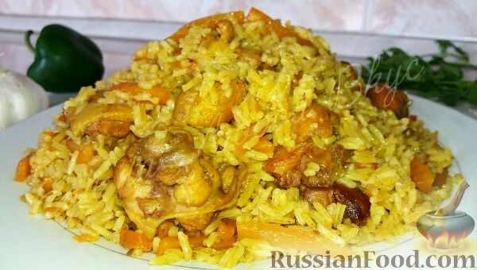

Рассыпчатый плов с курицей
Приготовить плов можно из любого мяса. Сегодня готовлю из курицы, но на выбор можно взять свинину, барашка или говядину. Это не совсем узбекский плов, но тоже очень рассыпчатый и вкусный. Как сделать плов, а не кашу? Есть несколько принципов. Расскажу, как я его готовлю для своей семьи.
Необходимые ингридиенты:
- Курица – 500 г
- Рис – 500 г
- Морковь - 500 г
- Чеснок – 1 головка
- Лук репчатый – 1 шт.
- Соль - по вкусу
- Перец черный молотый - по вкусу
- Приправа для плова - по вкусу
- Масло растительное (жир) – 120 мл
Приготовление пошагово:
Нарежем мясо кусочками, примерно 2х2 см. Обжарим до золотистого цвета, на сильном огне, в разогретом масле (курдючном жиру). Добавим луковицу, порезанную на кубики. Обжарим вместе
Добавляем морковь, нарезанную соломкой. Уменьшаем огонь и тушим до мягкости. Добавляем специи и соль. (Обязательно используем зиру, если ее нет в составе готовой приправы для плова.) Наливаем кипяток, чтобы вода покрывала мясо. Кладем головку чеснока, очищенную и промытую. Тушим зирвак (подливу) на среднем огне, до готовности мяса (для курицы – хватит 25-30 минут).
Промываем рис до чистой воды, раскладываем поверх мяса и доливаем кипятка, примерно на 1 см выше риса. Плотно закрываем крышку, готовим 20 минут.
Перед подачей не забываем достать чеснок.
Плов готов! Приятного аппетита!
